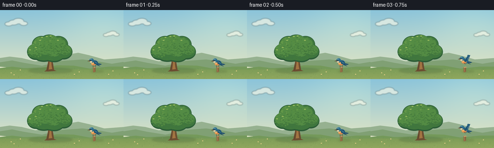
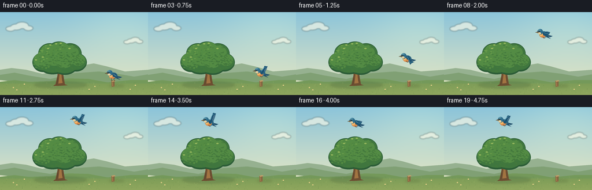

CODING AGENTS AS PIXEL WORLD MODELS
traex/GPT-6.1-Sol · dynamic_spatial_relationship_0049
点击播放 · 原生 RGB 像素
逐轮保存的候选
回放视频、检查图与代码变化。
每份候选均可单独播放。实际图片检查记录在下方工具轨迹中。
候选 01播放与检查图
点击播放 · 原生 RGB 像素


展开代码变化
--- 上一保存版本
+++ 本次保存版本
@@ -0,0 +1,152 @@
+from pathlib import Path
+import math
+import numpy as np
+from PIL import Image, ImageDraw, ImageFilter
+from artifact_io import save
+
+ROOT=Path(__file__).resolve().parent
+W,H,S=256,144,4
+rng=np.random.default_rng(53)
+
+def ellipse(d,box,fill,outline=None,width=1):
+ d.ellipse(tuple(int(v*S) for v in box),fill=fill,outline=outline,width=max(1,int(width*S)))
+def line(d,pts,fill,width=1):
+ d.line([(round(x*S),round(y*S)) for x,y in pts],fill=fill,width=max(1,round(width*S)),joint='curve')
+def poly(d,pts,fill):
+ d.polygon([(round(x*S),round(y*S)) for x,y in pts],fill=fill)
+
+# Hand-painted, softly lit countryside, entirely constructed from geometry.
+y,x=np.mgrid[0:H*S,0:W*S].astype(float); yn=y/(H*S)
+top=np.array([139,196,218]); bottom=np.array([235,232,192])
+bg=top[None,None,:]*(1-yn[:,:,None])+bottom[None,None,:]*yn[:,:,None]
+glow=np.exp(-((x-215*S)**2/(85*S)**2+(y-22*S)**2/(60*S)**2))[:,:,None]
+bg=np.clip(bg+glow*np.array([17,12,2]),0,255).astype('uint8')
+background=Image.fromarray(bg,'RGB'); d=ImageDraw.Draw(background)
+# Small high, distant cloud banks.
+cloud=Image.new('RGBA',background.size); cd=ImageDraw.Draw(cloud)
+for cx,cy,scale in [(34,26,1),(231,50,.7)]:
+ for dx,dy,r in [(-16,3,8),(-6,0,10),(4,-3,11),(15,2,8)]:
+ ellipse(cd,(cx+(dx-r)*scale,cy+(dy-r*.52)*scale,cx+(dx+r)*scale,cy+(dy+r*.52)*scale),(255,252,234,150))
+cloud=cloud.filter(ImageFilter.GaussianBlur(1.0*S)); background.paste(cloud,(0,0),cloud)
+d=ImageDraw.Draw(background)
+poly(d,[(0,111),(0,100),(20,97),(45,100),(73,107),(107,102),(139,93),(162,89),(184,94),(216,103),(256,100),(256,144)],(150,177,144))
+poly(d,[(0,118),(0,109),(25,105),(49,110),(87,116),(129,106),(171,103),(203,107),(232,112),(256,108),(256,144)],(128,160,116))
+poly(d,[(0,121),(25,118),(49,121),(86,120),(119,115),(153,116),(186,122),(225,118),(256,118),(256,144),(0,144)],(116,153,90))
+# Warm foreground gradient.
+for yy in range(124*S,H*S):
+ t=(yy/S-124)/20
+ d.line([(0,yy),(W*S,yy)],fill=(int(126+18*t),int(157+10*t),int(88+6*t)),width=1)
+# Dappled tree shadow and quiet post shadow.
+shadow=Image.new('RGBA',background.size); sd=ImageDraw.Draw(shadow)
+ellipse(sd,(59,121,150,132),(51,84,51,55)); ellipse(sd,(188,126,215,130),(62,85,42,45))
+shadow=shadow.filter(ImageFilter.GaussianBlur(2*S)); background.paste(shadow,(0,0),shadow)
+d=ImageDraw.Draw(background)
+# Ground details, quiet and sparse.
+for i in range(190):
+ gx=float(rng.uniform(0,256)); gy=float(rng.uniform(122,145)); ln=float(rng.uniform(.5,2.5))
+ c=[(94,133,72),(160,183,111),(109,145,76)][i%3]
+ line(d,[(gx,gy),(gx+float(rng.uniform(-1,1)),gy-ln)],c,.35)
+for gx,gy in [(23,131),(29,135),(42,125),(154,134),(164,129),(225,134),(234,127)]:
+ line(d,[(gx,gy+2),(gx,gy-1)],(81,125,64),.45)
+ ellipse(d,(gx-1,gy-1,gx+1,gy+1),(243,224,157))
+ ellipse(d,(gx-.35,gy-.35,gx+.35,gy+.35),(203,159,68))
+# Single oak trunk, exposed below its broad crown.
+poly(d,[(96,125),(100,107),(97,91),(101,77),(107,77),(108,101),(112,125),(117,127),(102,128),(92,128)],(109,78,49))
+poly(d,[(101,124),(103,107),(101,91),(104,78),(106,80),(105,100),(108,123)],(162,116,66))
+line(d,[(102,108),(87,91),(80,78)],(110,78,47),4)
+line(d,[(105,105),(118,88),(127,83)],(112,79,46),4)
+line(d,[(103,95),(112,79),(114,70)],(127,89,48),3)
+line(d,[(100,115),(98,126)],(82,65,45),.75)
+line(d,[(107,112),(108,120)],(90,67,43),.65)
+line(d,[(102,100),(100,93)],(207,151,82),.55)
+# Crown: organic lobes, layered shadows and warm leaf clusters.
+lobes=[(74,87,18,17),(86,72,20,18),(102,68,21,17),(121,72,20,18),(132,87,18,16),(112,89,24,20),(91,92,24,16)]
+for cx,cy,rx,ry in lobes:
+ ellipse(d,(cx-rx,cy-ry,cx+rx,cy+ry),(44,92,55))
+for cx,cy,rx,ry in lobes:
+ ellipse(d,(cx-rx+1,cy-ry+1,cx+rx-1,cy+ry-3),(63,118,62))
+for cx,cy,rx,ry in [(72,83,14,12),(85,69,15,13),(104,62,15,10),(121,70,15,12),(135,83,12,10),(93,81,17,12),(111,84,16,13)]:
+ ellipse(d,(cx-rx,cy-ry,cx+rx,cy+ry),(83,139,68))
+# Multi-scale leaf marks follow the crown, rather than random screen noise.
+for i in range(400):
+ cx,cy,rx,ry=lobes[int(rng.integers(len(lobes)))]
+ a=float(rng.uniform(0,math.tau)); r=math.sqrt(float(rng.uniform(0,1)))
+ px=cx+math.cos(a)*rx*r*.91; py=cy+math.sin(a)*ry*r*.84
+ light=(108-py)/65 + (105-px)/110
+ color= [(67,120,60),(85,140,66),(106,157,74),(124,169,82)][int(np.clip(light*2+float(rng.uniform(-.9,.9)),0,3))]
+ rr=float(rng.uniform(.7,2.0))
+ ellipse(d,(px-rr,py-rr*.45,px+rr,py+rr*.45),color)
+# Tiny lit clumps at the upper left.
+for px,py in [(74,78),(83,63),(97,55),(105,54),(120,63),(62,83),(87,57)]:
+ ellipse(d,(px-2,py-1,px+2,py+1),(151,184,94))
+# Short wooden perch to the right; not another tree.
+poly(d,[(192.5,119),(198,119),(198,129),(193,130)],(141,106,68))
+poly(d,[(192.5,119),(197.6,118),(200,119.6),(194.3,121)],(194,159,106))
+line(d,[(194.3,122),(194.6,128)],(192,150,92),.6)
+line(d,[(197,121),(197,127)],(109,83,55),.6)
+
+# A recognisable little bluebird, drawn in its own moving coordinate system.
+def bird(im,cx,cy,phase,perched=False):
+ layer=Image.new('RGBA',im.size); b=ImageDraw.Draw(layer)
+ def P(points,c): poly(b,[(cx+xx,cy+yy) for xx,yy in points],c)
+ def L(points,c,w=1): line(b,[(cx+xx,cy+yy) for xx,yy in points],c,w)
+ def E(box,c): ellipse(b,(cx+box[0],cy+box[1],cx+box[2],cy+box[3]),c)
+ flap=math.sin(phase)
+ if not perched:
+ # Far wing precedes the body.
+ P([(-1,0),(3,-3),(6,-5-8*flap),(12,-4-11*flap),(10,-1-7*flap),(6,3)],(68,113,139,255))
+ # Forked blue tail, behind the round body.
+ P([(4,1),(16,4),(12,6),(8,5),(13,9),(3,5)],(29,74,103,255))
+ L([(7,3),(13,5)],(95,148,165,255),.55)
+ # Belly and body, copper sunlit breast.
+ E((-7,-4,8,7),(45,101,129,255))
+ E((-6,0,4.5,7),(215,139,77,255))
+ E((-6.5,-.2,-.4,4.5),(242,178,101,255))
+ # Legs are folded during flight.
+ if perched:
+ L([(-2,6),(-2.4,10),(0,10)],(86,64,43,255),.7)
+ L([(2.2,6),(2,10),(4,10)],(86,64,43,255),.7)
+ else:
+ L([(-1,6),(1.3,7.7),(3.3,7.5)],(90,64,43,255),.65)
+ # Near wing with long, overlapping feather tips.
+ if perched:
+ P([(-1,-2),(5,-2),(9,3),(5,5),(0,3)],(30,83,112,255))
+ L([(1,-1),(6,2)],(94,152,173,255),.7)
+ L([(2,1),(6.5,3)],(63,120,148,255),.55)
+ else:
+ tipy=-3-12*flap
+ P([(-1,-2),(3,-4),(7,tipy-1),(11,tipy),(10,tipy+2.5),(7,tipy+4),(6,tipy+6),(3,4),(-.5,2)],(28,85,116,255))
+ L([(1,-2),(6,tipy+2),(9,tipy+1)],(98,157,179,255),.8)
+ L([(4,0),(7,tipy+4)],(15,62,92,255),.5)
+ # Head and fine eye/beak detail; all frames preserve the same bird.
+ E((-10,-8,-.5,1.5),(46,108,138,255))
+ E((-8.8,-7.4,-3.8,-5.4),(85,149,171,255))
+ E((-9,-2.2,-3.7,1.2),(229,206,156,255))
+ P([(-9,-4),(-14,-2.3),(-9,-1.3)],(75,61,44,255))
+ L([(-12,-2.3),(-9,-2.3)],(205,166,84,255),.4)
+ E((-8.4,-5.1,-6.1,-2.8),(16,33,37,255))
+ E((-7.95,-4.85,-7.2,-4.1),(255,251,224,255))
+ im.paste(layer,(0,0),layer)
+
+# Rest on the right, take off, ascend clear of the crown, and arrive above it.
+# A cubic Bezier curve gives smooth acceleration and a clear ending relationship.
+def bezier(t,p0,p1,p2,p3):
+ return tuple((1-t)**3*p0[k]+3*(1-t)**2*t*p1[k]+3*(1-t)*t*t*p2[k]+t**3*p3[k] for k in (0,1))
+frames=[]
+for i in range(20):
+ im=background.copy()
+ if i<3:
+ cx,cy=195,108.8+.2*math.sin(i*1.8)
+ perched=True
+ elif i<=15:
+ t=(i-2)/13
+ ease=t*t*(3-2*t)
+ cx,cy=bezier(ease,(195,109),(191,26),(153,17),(103,26))
+ perched=False
+ else:
+ cx=103-.4*math.sin((i-15)*.9)
+ cy=26+1.0*math.sin((i-15)*1.3)
+ perched=False
+ bird(im,cx,cy,(i-3)*2.35+.7,perched)
+ frames.append(np.array(im.resize((W,H),Image.Resampling.LANCZOS).convert('RGB'),dtype=np.uint8))
+save(np.stack(frames),ROOT)
可观测工具轨迹
实际执行的命令与返回图片。
命令 1exit 0
/bin/bash -lc 'ls -la && cat prompt.txt && cat GENERATION_RULES.md && cat task_spec.json'
命令 2exit 0
/bin/bash -lc 'cat artifact_io.py && ls .tmp'
命令 3exit 0
/bin/bash -lc "cat > generate.py <<'PY'
from pathlib import Path
import math
import numpy as np
from PIL import Image, ImageDraw, ImageFilter
from artifact_io import save
ROOT=Path(__file__).resolve().parent
W,H,S=256,144,4
rng=np.random.default_rng(53)
def ellipse(d,box,fill,outline=None,width=1):
d.ellipse(tuple(int(v*S) for v in box),fill=fill,outline=outline,width=max(1,int(width*S)))
def line(d,pts,fill,width=1):
d.line([(round(x*S),round(y*S)) for x,y in pts],fill=fill,width=max(1,round(width*S)),joint='curve')
def poly(d,pts,fill):
d.polygon([(round(x*S),round(y*S)) for x,y in pts],fill=fill)
# Hand-painted, softly lit countryside, entirely constructed from geometry.
y,x=np.mgrid[0:H*S,0:W*S].astype(float); yn=y/(H*S)
top=np.array([139,196,218]); bottom=np.array([235,232,192])
bg=top[None,None,:]*(1-yn[:,:,None])+bottom[None,None,:]*yn[:,:,None]
glow=np.exp(-((x-215*S)**2/(85*S)**2+(y-22*S)**2/(60*S)**2))[:,:,None]
bg=np.clip(bg+glow*np.array([17,12,2]),0,255).astype('uint8')
background=Image.fromarray(bg,'RGB'); d=ImageDraw.Draw(background)
# Small high, distant cloud banks.
cloud=Image.new('RGBA',background.size); cd=ImageDraw.Draw(cloud)
for cx,cy,scale in [(34,26,1),(231,50,.7)]:
for dx,dy,r in [(-16,3,8),(-6,0,10),(4,-3,11),(15,2,8)]:
ellipse(cd,(cx+(dx-r)*scale,cy+(dy-r*.52)*scale,cx+(dx+r)*scale,cy+(dy+r*.52)*scale),(255,252,234,150))
cloud=cloud.filter(ImageFilter.GaussianBlur(1.0*S)); background.paste(cloud,(0,0),cloud)
d=ImageDraw.Draw(background)
poly(d,[(0,111),(0,100),(20,97),(45,100),(73,107),(107,102),(139,93),(162,89),(184,94),(216,103),(256,100),(256,144)],(150,177,144))
poly(d,[(0,118),(0,109),(25,105),(49,110),(87,116),(129,106),(171,103),(203,107),(232,112),(256,108),(256,144)],(128,160,116))
poly(d,[(0,121),(25,118),(49,121),(86,120),(119,115),(153,116),(186,122),(225,118),(256,118),(256,144),(0,144)],(116,153,90))
# Warm foreground gradient.
for yy in range(124*S,H*S):
t=(yy/S-124)/20
d.line([(0,yy),(W*S,yy)],fill=(int(126+18*t),int(157+10*t),int(88+6*t)),width=1)
# Dappled tree shadow and quiet post shadow.
shadow=Image.new('RGBA',background.size); sd=ImageDraw.Draw(shadow)
ellipse(sd,(59,121,150,132),(51,84,51,55)); ellipse(sd,(188,126,215,130),(62,85,42,45))
shadow=shadow.filter(ImageFilter.GaussianBlur(2*S)); background.paste(shadow,(0,0),shadow)
d=ImageDraw.Draw(background)
# Ground details, quiet and sparse.
for i in range(190):
gx=float(rng.uniform(0,256)); gy=float(rng.uniform(122,145)); ln=float(rng.uniform(.5,2.5))
c=[(94,133,72),(160,183,111),(109,145,76)][i%3]
line(d,[(gx,gy),(gx+float(rng.uniform(-1,1)),gy-ln)],c,.35)
for gx,gy in [(23,131),(29,135),(42,125),(154,134),(164,129),(225,134),(234,127)]:
line(d,[(gx,gy+2),(gx,gy-1)],(81,125,64),.45)
ellipse(d,(gx-1,gy-1,gx+1,gy+1),(243,224,157))
ellipse(d,(gx-.35,gy-.35,gx+.35,gy+.35),(203,159,68))
# Single oak trunk, exposed below its broad crown.
poly(d,[(96,125),(100,107),(97,91),(101,77),(107,77),(108,101),(112,125),(117,127),(102,128),(92,128)],(109,78,49))
poly(d,[(101,124),(103,107),(101,91),(104,78),(106,80),(105,100),(108,123)],(162,116,66))
line(d,[(102,108),(87,91),(80,78)],(110,78,47),4)
line(d,[(105,105),(118,88),(127,83)],(112,79,46),4)
line(d,[(103,95),(112,79),(114,70)],(127,89,48),3)
line(d,[(100,115),(98,126)],(82,65,45),.75)
line(d,[(107,112),(108,120)],(90,67,43),.65)
line(d,[(102,100),(100,93)],(207,151,82),.55)
# Crown: organic lobes, layered shadows and warm leaf clusters.
lobes=[(74,87,18,17),(86,72,20,18),(102,68,21,17),(121,72,20,18),(132,87,18,16),(112,89,24,20),(91,92,24,16)]
for cx,cy,rx,ry in lobes:
ellipse(d,(cx-rx,cy-ry,cx+rx,cy+ry),(44,92,55))
for cx,cy,rx,ry in lobes:
ellipse(d,(cx-rx+1,cy-ry+1,cx+rx-1,cy+ry-3),(63,118,62))
for cx,cy,rx,ry in [(72,83,14,12),(85,69,15,13),(104,62,15,10),(121,70,15,12),(135,83,12,10),(93,81,17,12),(111,84,16,13)]:
ellipse(d,(cx-rx,cy-ry,cx+rx,cy+ry),(83,139,68))
# Multi-scale leaf marks follow the crown, rather than random screen noise.
for i in range(400):
cx,cy,rx,ry=lobes[int(rng.integers(len(lobes)))]
a=float(rng.uniform(0,math.tau)); r=math.sqrt(float(rng.uniform(0,1)))
px=cx+math.cos(a)*rx*r*.91; py=cy+math.sin(a)*ry*r*.84
light=(108-py)/65 + (105-px)/110
color= [(67,120,60),(85,140,66),(106,157,74),(124,169,82)][int(np.clip(light*2+float(rng.uniform(-.9,.9)),0,3))]
rr=float(rng.uniform(.7,2.0))
ellipse(d,(px-rr,py-rr*.45,px+rr,py+rr*.45),color)
# Tiny lit clumps at the upper left.
for px,py in [(74,78),(83,63),(97,55),(105,54),(120,63),(62,83),(87,57)]:
ellipse(d,(px-2,py-1,px+2,py+1),(151,184,94))
# Short wooden perch to the right; not another tree.
poly(d,[(192.5,119),(198,119),(198,129),(193,130)],(141,106,68))
poly(d,[(192.5,119),(197.6,118),(200,119.6),(194.3,121)],(194,159,106))
line(d,[(194.3,122),(194.6,128)],(192,150,92),.6)
line(d,[(197,121),(197,127)],(109,83,55),.6)
# A recognisable little bluebird, drawn in its own moving coordinate system.
def bird(im,cx,cy,phase,perched=False):
layer=Image.new('RGBA',im.size); b=ImageDraw.Draw(layer)
def P(points,c): poly(b,[(cx+xx,cy+yy) for xx,yy in points],c)
def L(points,c,w=1): line(b,[(cx+xx,cy+yy) for xx,yy in points],c,w)
def E(box,c): ellipse(b,(cx+box[0],cy+box[1],cx+box[2],cy+box[3]),c)
flap=math.sin(phase)
if not perched:
# Far wing precedes the body.
P([(-1,0),(3,-3),(6,-5-8*flap),(12,-4-11*flap),(10,-1-7*flap),(6,3)],(68,113,139,255))
# Forked blue tail, behind the round body.
P([(4,1),(16,4),(12,6),(8,5),(13,9),(3,5)],(29,74,103,255))
L([(7,3),(13,5)],(95,148,165,255),.55)
# Belly and body, copper sunlit breast.
E((-7,-4,8,7),(45,101,129,255))
E((-6,0,4.5,7),(215,139,77,255))
E((-6.5,-.2,-.4,4.5),(242,178,101,255))
# Legs are folded during flight.
if perched:
L([(-2,6),(-2.4,10),(0,10)],(86,64,43,255),.7)
L([(2.2,6),(2,10),(4,10)],(86,64,43,255),.7)
else:
L([(-1,6),(1.3,7.7),(3.3,7.5)],(90,64,43,255),.65)
# Near wing with long, overlapping feather tips.
if perched:
P([(-1,-2),(5,-2),(9,3),(5,5),(0,3)],(30,83,112,255))
L([(1,-1),(6,2)],(94,152,173,255),.7)
L([(2,1),(6.5,3)],(63,120,148,255),.55)
else:
tipy=-3-12*flap
P([(-1,-2),(3,-4),(7,tipy-1),(11,tipy),(10,tipy+2.5),(7,tipy+4),(6,tipy+6),(3,4),(-.5,2)],(28,85,116,255))
L([(1,-2),(6,tipy+2),(9,tipy+1)],(98,157,179,255),.8)
L([(4,0),(7,tipy+4)],(15,62,92,255),.5)
# Head and fine eye/beak detail; all frames preserve the same bird.
E((-10,-8,-.5,1.5),(46,108,138,255))
E((-8.8,-7.4,-3.8,-5.4),(85,149,171,255))
E((-9,-2.2,-3.7,1.2),(229,206,156,255))
P([(-9,-4),(-14,-2.3),(-9,-1.3)],(75,61,44,255))
L([(-12,-2.3),(-9,-2.3)],(205,166,84,255),.4)
E((-8.4,-5.1,-6.1,-2.8),(16,33,37,255))
E((-7.95,-4.85,-7.2,-4.1),(255,251,224,255))
im.paste(layer,(0,0),layer)
# Rest on the right, take off, ascend clear of the crown, and arrive above it.
# A cubic Bezier curve gives smooth acceleration and a clear ending relationship.
def bezier(t,p0,p1,p2,p3):
return tuple((1-t)**3*p0[k]+3*(1-t)**2*t*p1[k]+3*(1-t)*t*t*p2[k]+t**3*p3[k] for k in (0,1))
frames=[]
for i in range(20):
im=background.copy()
if i<3:
cx,cy=195,108.8+.2*math.sin(i*1.8)
perched=True
elif i<=15:
t=(i-2)/13
ease=t*t*(3-2*t)
cx,cy=bezier(ease,(195,109),(191,26),(153,17),(103,26))
perched=False
else:
cx=103-.4*math.sin((i-15)*.9)
cy=26+1.0*math.sin((i-15)*1.3)
perched=False
bird(im,cx,cy,(i-3)*2.35+.7,perched)
frames.append(np.array(im.resize((W,H),Image.Resampling.LANCZOS).convert('RGB'),dtype=np.uint8))
save(np.stack(frames),ROOT)
PY
python generate.py"视觉工具实际返回图片 1

保存候选 1 份；完成命令 3 次；可验证图片返回 1 张。原始 API 响应与完整日志保留在本地。